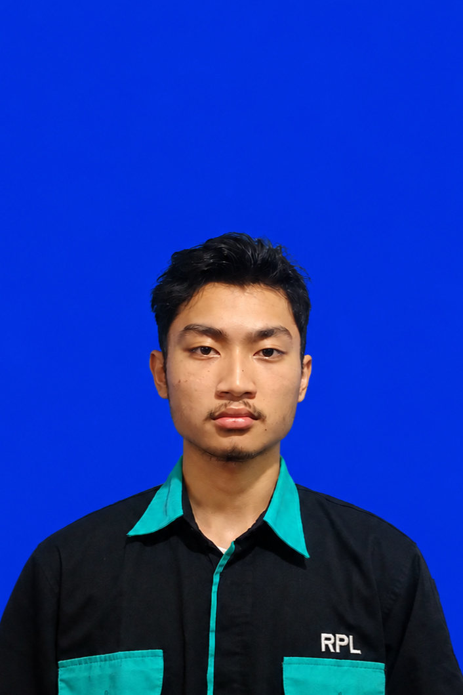

TENTANG
SAYA.

Ketika RPL dan Sepak Bola Menjadi Satu
Saya Mochamad Ilham Kautsar Pratama, seorang siswa jurusan Rekayasa Perangkat Lunak (RPL) yang saat ini sedang mengembangkan diri di dunia pemrograman. Di samping fokus mempelajari pengembangan aplikasi dan web, saya adalah seorang penggemar berat sepak bola yang sangat menikmati aspek taktikal
Saya memegang teguh prinsip bahwa bakat yang besar tidak akan menjadi apa-apa tanpa adanya kerja keras dan konsistensi. Bagi saya, kesalahan atau error dalam proses belajar bukanlah tanda kegagalan, melainkan sebuah sesuatu baru yang harus diselesaikan. Saya juga sangat menghargai kerja sama kelompok, karena sebuah hasil yang besar jarang sekali lahir dari satu orang saja, melainkan dari kerja sama tim.
Perjalanan saya dimulai dari ketertarikan pada bagaimana sebuah sistem digital dibangun. Sebagai pemula di bidang RPL, awalnya memahami logika coding dan database terasa cukup menantang. Namun, dengan terus berlatih lalu mempraktikkannya langsung termasuk melalui pengalaman nyata selama masa PKL (Praktik Kerja Lapangan), saya belajar bagaimana menerapkan kedisiplinan kerja, berkomunikasi dalam tim, dan menyelesaikan kendala teknis secara terstruktur.
REKAYASA PERANGKAT LUNAK
- Laravel & Database (Dasar)
- HTML, CSS, JS (Dasar)
SEPAK BOLA
- Sistem Taktik